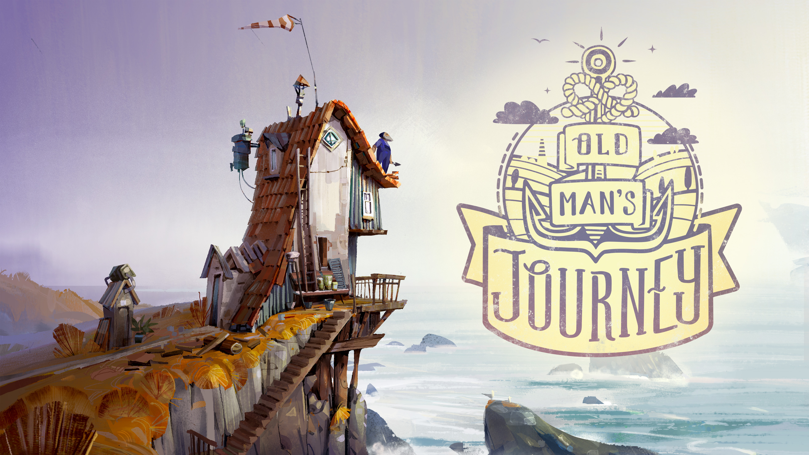

Old Man’s Journey is a puzzle adventure game and is a great example of storytelling using the medium of video games. It includes the journey of an Old Man who is travelling through different landscapes and villages. During this journey, he remembers his old memories, shattered thoughts and altered plans
The game starts with the Old Man receiving a letter from a postman, the content of the letter is not shown to the players but after reading it he carries his backpack with a walking stick and seems ready to travel. There is no tutorial for the players however moving the mouse and clicking at different locations reveal new findings. The movement is done by just clicking at different points within the game. If one wants to travel to another hill, players have to align the ridges and slopes. With this alignment, the Old Man is able to travel to different mountains and proceed further in the game. Clicking at other tiny things like windows, bells, cat, bikes, cars etc. also treats the players with some animation or sound.
Puzzles are rather simple during the whole game, there is no pressure or stress, one can easily finds his way through levels. There is no text and human voices yet there is background music. As per my observation, the sound was not in harmony with the gameplay, I tried to play the game with the sound off. Gameplay looked a bit slow as moving the Old Man from one place to another was kind of tiring. On the other hand, music was fast paced which surely didn’t connect with gameplay.
Art is probably the best thing this game has to offer, the Old Man rides through beautiful and mesmerizing townships, country roads and seaside lanes. After the end of each level, he takes rest and player is shown a recall from his past that adds up to the love, regret and redemption. Overall, it’s a great game with basic mechanics and pretty art.